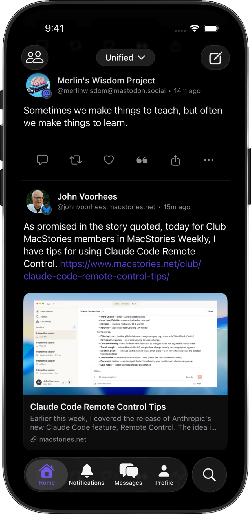

SocialFusion brings your Mastodon and Bluesky timelines together in one beautiful, native iOS app. No more switching. Just scrolling.

Built for people who live across multiple social networks and wish they didn't need multiple apps to do it.
Stop switching apps. Your Mastodon and Bluesky posts land in a single chronological timeline, clearly labeled so you always know which network you're looking at.
Reply on Mastodon, like on Bluesky, quote-post across either — all without leaving the app. One compose screen, two networks.
Industry-standard OAuth and secure tokens, stored in your iOS Keychain. No passwords on a server somewhere — because there is no server.
100% SwiftUI. Smooth scrolling, pull-to-refresh, dark mode, light mode — every interaction feels like the rest of your iPhone.
Link previews, media galleries, quote posts, polls — everything renders inline the way it should. Tap any image to go fullscreen.
VoiceOver, Dynamic Type, custom accessibility actions, WCAG compliance. Great software doesn't get to pick its audience.
Three steps. That's it.
Sign in to your Mastodon instance (any instance!) and your Bluesky account. Secure OAuth — no passwords stored.
Both feeds merge into a single, chronological timeline. Every post is labeled with its platform so you never lose context.
Like, reply, repost, and compose — all from one app. SocialFusion handles the rest.
SocialFusion's full source code is public under the MIT license. Audit how your data is handled, report issues, or contribute improvements. An app for the open social web should have nothing to hide.
Join the public beta and help shape SocialFusion.